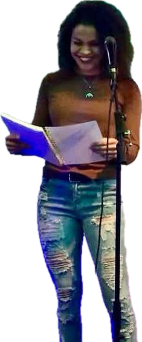
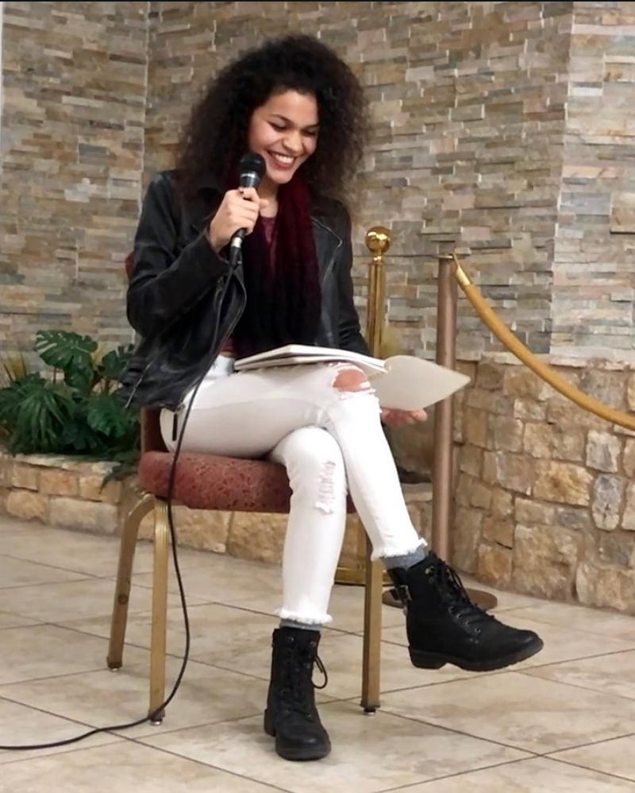
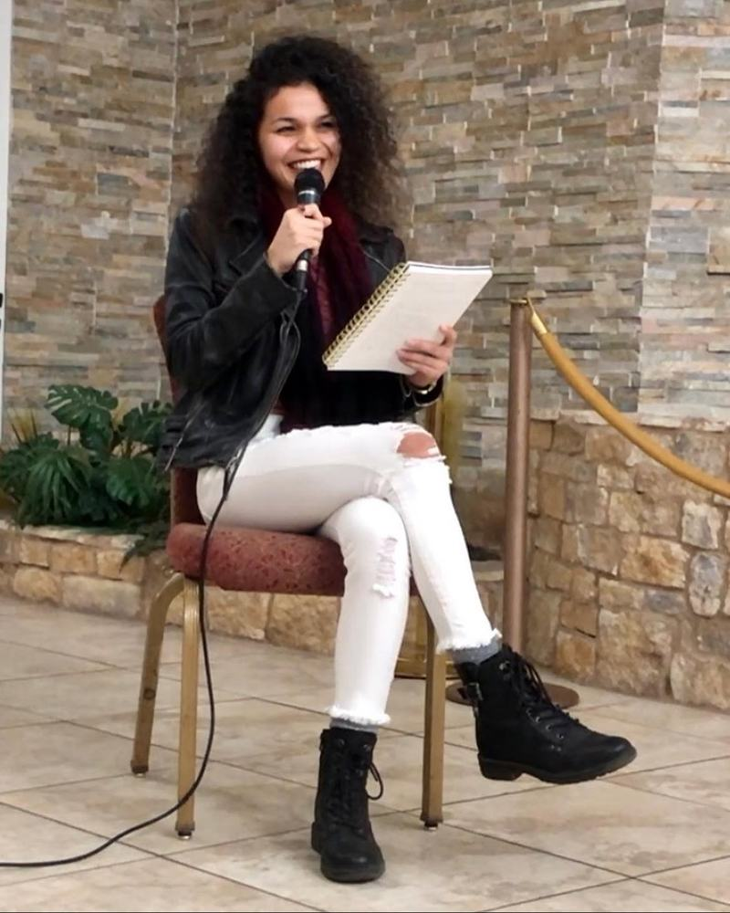
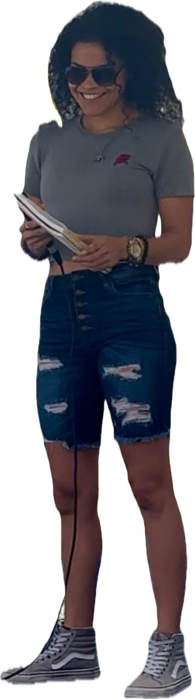

Poet · Speaker · Creator · Intuitive Voice
Poeta · Oradora · Creadora · Voz Intuitiva
When the voice enters the room.
Cuando la voz entra en la sala.
Poetry, lived experience and honest conversation, carried into microphones, stages and circles.
Poesía, experiencia vivida y conversación honesta, llevadas a micrófonos, escenarios y círculos.


Live
En vivo
Less a keynote. More an invitation to listen closely.
Menos una conferencia. Más una invitación a escuchar de cerca.
I speak the way I write: from what is true, with room for what is felt. A reading can open a conversation; a conversation can find its way into a poem.
Whether it’s a podcast, a panel or a circle of twelve, I come to connect rather than to perform.
Hablo de la misma forma en que escribo: desde lo verdadero, con espacio para lo que se siente. Una lectura puede abrir una conversación; una conversación puede encontrar su camino hacia un poema.
Ya sea un podcast, un panel o un círculo de doce personas, vengo a conectar, no a actuar.



Invitations & Collaborations
The rooms I love to be in.
Invitaciones y Colaboraciones
Las salas donde amo estar.
- Keynote & Guest Speaking Poetry, presence & a soul-deep perspective
- Podcast & Media Conversation that goes past the surface
- Creative Collaborations Brand & artist partnerships, chosen for alignment
- Events & Gatherings Retreats & circles built for real connection
- Aligned Invitations Wherever the voice belongs
- Conferencias e Invitados Poesía, presencia y una perspectiva desde el alma
- Podcast y Medios Conversación que va más allá de la superficie
- Colaboraciones Creativas Alianzas con marcas y artistas, elegidas por alineación
- Eventos y Encuentros Retiros y círculos construidos para la conexión real
- Invitaciones Alineadas Donde sea que la voz pertenezca
Invitations & Collaborations
Invitaciones y Colaboraciones
Invite Cyndiii.
Invita a Cyndiii.
For speaking, podcast, media & collaboration inquiries. Tell me about the room: who will be there, what you’re gathering around, and when.
Para consultas de conferencias, podcast, medios y colaboraciones. Cuéntame sobre la sala: quién estará, en torno a qué se reúnen y cuándo.
- Event
- Date
- Audience
- Format
- Evento
- Fecha
- Audiencia
- Formato